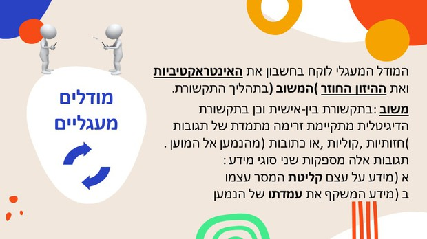
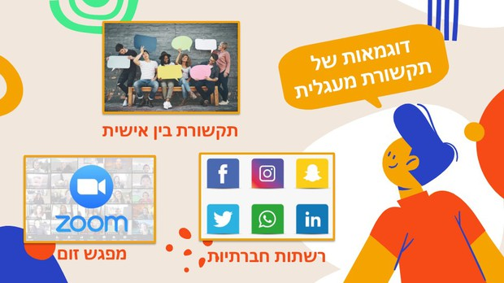
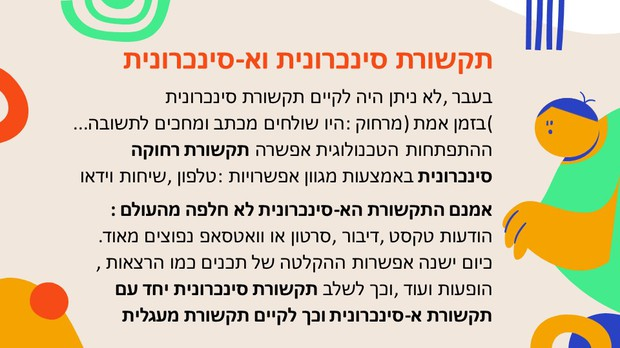

מודל מעגלי (Osgood & Schramm)
תקשורת כתהליך דינמי, דו-כיווני ואינסופי של החלפת תפקידים בין מוען לנמען.
שאלה לדיון
מהו ההבדל המרכזי בין שתי הסיטואציות בתמונה?
תמונה זו ממחישה את ההבדל בין תקשורת חד-כיוונית (כמו במודל הליניארי) לבין תקשורת דו-כיוונית, שבה יש דיאלוג והחלפת מידע בין הצדדים.
תמונה זו ממחישה את ההבדל בין תקשורת חד-כיוונית (כמו במודל הליניארי) לבין תקשורת דו-כיוונית, שבה יש דיאלוג והחלפת מידע בין הצדדים.
בואו נצפה...
סרטון קצר המדגים סיטואציה של תקשורת מעגלית, שבה יש החלפת תפקידים ומשוב מתמיד בין המשתתפים.
▶ צפייה בסרטון🔒 סיסמה לצפייה: 2020

מודל מעגלי (1954)
מודל זה, שפותח על ידי אוסגוד ושרם, מתאר את התקשורת כתהליך מעגלי ואינסופי. בניגוד למודל הקווי, כאן אין התחלה וסוף ברורים. כל משתתף הוא גם מוען וגם נמען בו-זמנית.
החידוש המרכזי:
החידוש המרכזי:
הוספת רכיב המשוב (Feedback) ההופך את התהליך לדו-כיווני.

עקרונות המודל
- דו-כיווניות: התקשורת זורמת לשני הכיוונים.
- משוב (Feedback): תגובת הנמען למסר, המאפשרת למוען לתקן או לשנות את המסר הבא.
- החלפת תפקידים: המוען הופך לנמען והנמען למוען באופן מתמיד.
- פענוח וקידוד: כל צד עוסק כל הזמן בפענוח מסרים (כנמען) ובקידוד מסרים חדשים (כמוען).

דוגמאות ליישום המודל
מודל זה מתאים לתיאור מצבים של תקשורת בין-אישית או תקשורת מתווכת מחשב המאפשרת אינטראקציה:
- שיחה פנים מול פנים: דיאלוג שבו שני הצדדים מדברים ומגיבים.
- צ'אט / וואטסאפ: התכתבות שבה יש החלפת הודעות ותגובות מיידיות.
- טוקבקים: תגובות גולשים לכתבה באינטרנט, היוצרות דיון.
סיכום: ליניארי מול מעגלי
| קריטריון | מודל ליניארי (קווי) | מודל מעגלי |
|---|---|---|
| כיוון הזרימה | חד-סטרי (→) | דו-סטרי / מעגלי (⇄) |
| משוב (Feedback) | אין (או מושהה מאוד) | יש, מרכזי וחיוני |
| תפקידים | מוען ונמען קבועים | החלפת תפקידים מתמדת |
| דוגמה טיפוסית | פרסומת בטלוויזיה | שיחה בוואטסאפ |
סרטון סיכום והעשרה
הסבר נוסף על המודל המעגלי, המדגיש את חשיבות הפירוש וההקשר בתהליך התקשורת.
▶ צפייה בסרטון המסכם🔒 סיסמה לצפייה: 2020

ניתוח דוגמה: שיחה בוואטסאפ
כיצד שיחת וואטסאפ מדגימה את המודל המעגלי?
החלפת תפקידים: אני שולח הודעה (מוען) > אתם קוראים (נמען) > אתם מגיבים (הופכים למוען) > אני קורא (הופך לנמען).
משוב (Feedback): התגובה שלכם (טקסט, אימוג'י, או אפילו "וי כחול") היא המשוב שמאשר קבלה והבנה.
קידוד ופענוח: שני הצדדים כל הזמן חושבים איך לנסח את ההודעה הבאה (קידוד) ומפרשים את ההודעה שקיבלו (פענוח).